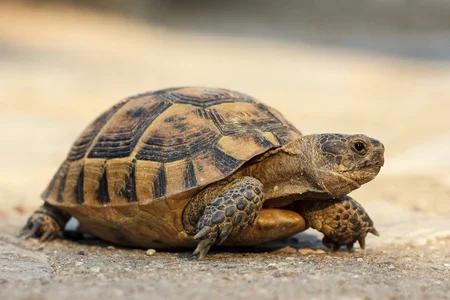
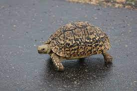

Kısaca: Kaplumbağa (ya da tosbağa) Testudines takımını oluşturan çok sert ve kemiksi bir kabuk içinde yaşayan, ağır yürüyüşlü, dört ayaklı, sürüngen bir hayvandır.Kaplumbağa yaşadığı yerler: Aslen sıcak memleket hayvanlarıdır. Kara, deniz ve tatlı sularda yaşayan türleri vardır. Özellikleri: Vücutları kabuk biçiminde kubbemsi bir bağa ile örtülüdür. Tehlike anında baş, bacak ve kuyruklarını içeri çekebilirler. Çeneleri dişsizdir. Yumurtlayarak ürerler. Ömrü: 40-200 yıl kadardır. Çeşitleri: Kara, deniz ve tatlı sularda yaşayan 250 kadar türü bilinmektedir.
Hareketleri yönünden ne kadar telaşsız ve ağır hayvanlarsa onların tarih boyunca gelişimi de o kadar yavaş olmuştur. Kaplumbağalar, öteki sürüngenlerle birlikte Mezozoik'in ilk dönemi olan Trias Çağı'nda ortaya çıktılar. 200 milyon yıldan beri kaplumbağaların vücut yapıları önemli hiçbir değişikliğe uğramamıştır. Halbuki kaplumbağalar, dünyada soyu henüz tükenmemiş en eski hayvanlardandır.Açlığa pek dayanıklıdırlar. Çok uzun ömürlüdürler. Yüz, yüz elli yıl kadar yaşarlar. Kaplumbağa sık sık ölümsü bir uykuya dalar. Yaşadığı çevrede sıcaklık düşmeye başlayınca hayvan iyice uyuşup kalır. Bol Güneş ışığı alan kuru topraklarda kendine bir delik kazıp bütün kışı orada geçirmek üzere içine girer. Günümüzde, soyunu sürdürmekte olan 250'ye yakın kaplumbağa türü bulunmaktadır.
Sürüngenler sınıfının, kaplumbağalar (Testudinata) takımından, vücutları, “bağa” denilen kemiksi bir kabukla örtülü, kısa bacaklı, dişsiz gaga ağızlı türlerine verilen genel ad. Tosbağa da denir. Karada, denizde ve tatlı sularda yaşayan 250 kadar türü vardır. Kemik parçalarının kaynaşmasından meydana gelen zırhlarının iki ucunda birer delik vardır. Ön delikten kaplumbağanın başı ile ön iki ayağı, arkadakinden kuyruğu ve iki arka bacağı çıkar. Tehlike anında bu kısımlarını kabuğunun içine çekebilirler. Alt ve üst yüzeyleri boynuzsu deri levhalarla kaplıdır. Her sene ilave edilen halkalarına bakılarak hayvanın yaşı tahmin edilebilir. Yaş ilerledikçe veya hastalık ve fiziki şartlara bağlı olarak katları belirleyen çizgiler bozulabilir. 123 sene yaşamış deniz kaplumbağası tesbit edilmiştir.
 